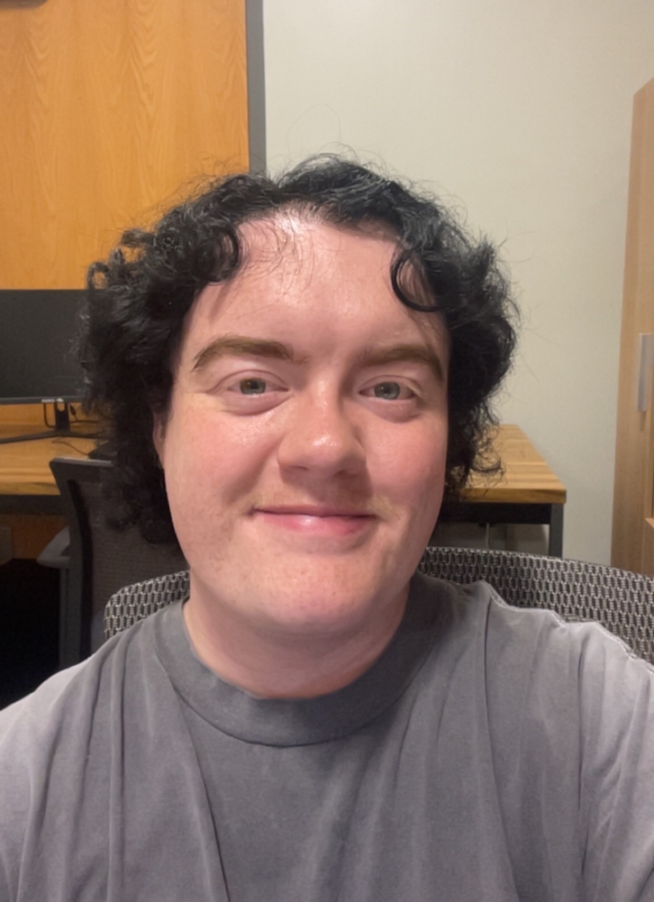
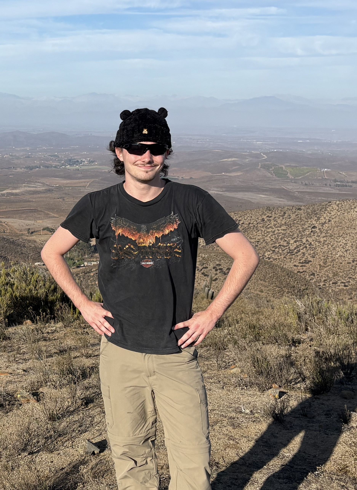
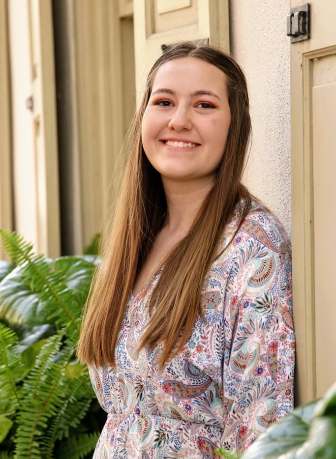
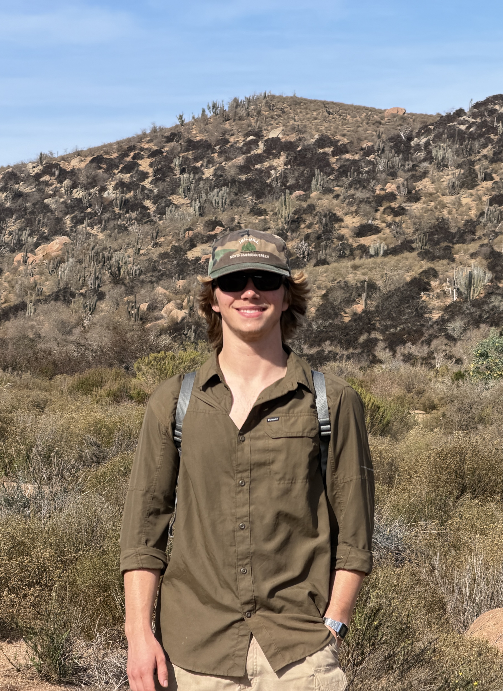
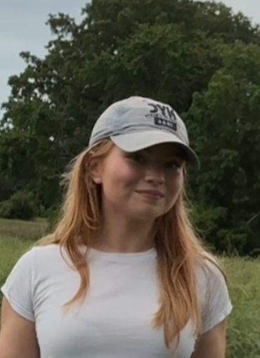
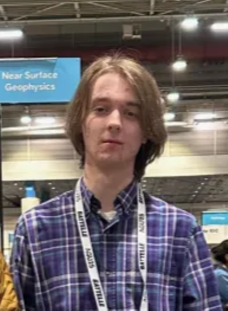
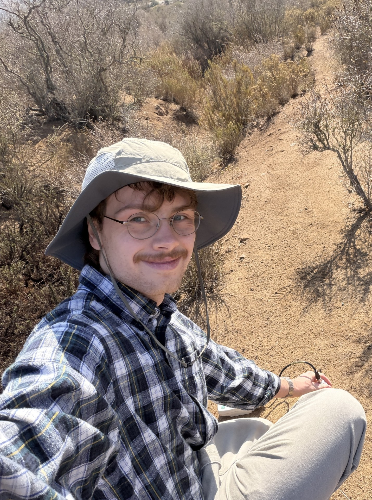

Dr. Azad Hossain

I am an environmental geoscientist with expertise in geospatial technology. The general focus of my research interests is in the geological and environmental applications of GIS, remote sensing (optical and microwave), and spatial analysis coupled with numerical modeling. I am an expert in digital image processing, remote sensing, GIS, and spatial analysis. Technical skills include but not limited to: GIS data creation and editing, GIS data management and analysis, Geo-spatial modeling (graphical modeling), Image Processing and analysis with optical (multispectral and hyperspectral data) and microwave data, Decision Support Systems (DSS) Design and Geostatistical Analysis. I have more than 25 years of experience in different GIS and digital image processing softwares such as ArcGIS (ArcGIS Pro, ArcGIS Desktop, PC Arc Info, Arc Info Workstation, ArcServer), ERDAS Imagine and ENVI. Has professional trainings on ESRI PC Arc/Info 3.4, ArcView GIS 3.1, ArcView Spatial Analyst 2.0, Arc/Info 8.02, ArcIMS, Trimble GPS/DGPS, CalComp Plotter, Microsoft Access and Visual Basic.
Graduate Students

Caspar Alsobrooks, M.S. Environmental Science
Caspar Alsobrooks is a 2nd year graduate student in the Master of Environmental Science program at UT Chattanooga. He also holds a Bachelor`s degree in Computer Science from UTC. His research interests include water quality, algal blooms, urban heat islands, and climate resilience. His thesis consists of developing a machine-learning model to assess algal bloom susceptibility by predicting chlorophyll-a levels in the Tennessee River, given changes in temperature, urban heat island intensity, and nutrient load within the watershed. Caspar assists with various projects within the lab, such as a city-funded project analyzing the impact of urbanization on sedimentation in a prominent watershed, a NASA-funded project modeling Chlorophyll-a concentration in the Tennessee River, and the development of this website! Outside of the lab, he is a TA for undergraduate GIS lab sections and serves as the Vice President of the UTC ASPRS student chapter and GIS club.

Nicklaus Kuntzman, M.S. Environmental Science
Nicklaus Kuntzman is a first-year graduate student in Environmental Science at the University of Tennessee at Chattanooga. He earned his bachelor`s degree in Environmental Science from UTC, where he worked on research supported by a NASA ROSES grant. His research focused on assessing water quality in the Tennessee river, developing machine learning models to predict turbidity and chlorophyll concentrations from in-situ data. In addition, Nicklaus participated in international research in Chile, where he evaluated GPS collar accuracy for small rodents and collected ground-truth habitat data to support ecological research. As a graduate student, Nicklaus plans to continue researching water quality in the Tennessee River using remote sensing and new machine learning methods using field based observations.

Anna Sherrill, M.S. Environmental Science
Anna Sherrill is a graduate student at the University of Tennessee at Chattanooga. She is pursuing her M.S. in Environmental Science with an emphasis on remote sensing applications to water quality. Through her thesis research and her research contributions under a NASA ROSES RIA grant, Anna aims to contribute to the scientific community through developing accessible and accurate remote sensing-based algorithms to estimate water quality in major inland bodies of water in the United States. Though her research has investigated water quality parameters such as turbidity, NDSSI, and TSS, she maintains a major focus on Chlorophyll-a and the parameters associated complex dynamics. Anna also remains active in the American Society for Photogrammetry and Remote Sensing as the student advisory deputy chair, mid-south regional director, and president of the UTC student chapter. She also remains active as a previous president for the UTC GIS club.
Undergraduate Students

Sam Jayroe, B.S. Environmental Science
Sam is a third-year Environmental Science student at UTC with a minor in GIS. He currently works as an undergraduate researcher in the GERS lab on two separate projects. The first is an NSF-funded project examining land cover changes of the Octodon degus Chilean habitat using multispectral imagery and field validation. This project will serve as the foundation for Sam's Departmental Honors thesis. The second is funded by a City of Chattanooga grant to analyze the impervious surface land cover change in the Friar Branch watershed. In addition to his student research, Sam is currently working for the City of Chattanooga as a Water Quality Trainee where he is training to perform Stormwater Control Measure inspections. Sam's goal is to further his knowledge of environmental applications of GIS and remote sensing.

Rebecca Nix, B.S. Geology
Rebecca Nix is a rising senior at the University of Tennessee at Chattanooga, majoring in Geology with a concentration in Geospatial Science and minoring in Geographic Information Science (GIS). She currently serves as President of the UTC GIS Club and Secretary-Treasurer of the local ASPRS chapter. Previously, she participated in a Research Experience for Undergraduates (REU) at the Louisiana Universities Marine Consortium (LUMCON). She also works as a Research Assistant under Dr. Azad Hossain in the Global Environmental Remote Sensing Laboratory, where she develops GIS-based web portals to communicate and share the laboratory's research findings. In addition, she is a GIS Intern at PlayCore, where she conducts spatial analyses of market share, product performance, and competitive landscapes to support strategic decision-making.

Matthew Smith
Matthew Smith is an undergraduate student studying geology at the University of Tennessee at Chattanooga. He has been working in the GERS Lab since the summer of 2025. His main focus has been on mapping turbidity in the Tennessee River using satellite imagery. More recently, Matthew has been tasked with finding the cause of seasonal turbidity trends within the Tennessee River and determining how much local rainfall influences those trends. Matthew has conducted oral and poster presentations displaying his work at multiple conferences including the ASPRS Mid-South Region conference and the UTC Spring Research and Arts conference.

Adam Williams, B.S. Environmental Science
Adam Williams is a third year undergraduate student at UTC, studying Environmental Science with concentrations in Geographic and Cartographic Sciences and Environmental Policy and Planning. Within the GERS Lab, he is currently involved with two projects: The first project aims to improve drought prediction in the Coquimbo region of Chile using both satellite and ground truth data. The second project investigates how urban development has affected the water quality of Friar Branch in Chattanooga, Tennessee. Adam plans to use his work in the GERS Lab as the basis for his Departmental Honors thesis.
Past Members

smart previous student's name
I used to be here doing a, b, and c, now I do x, y, and z!
Opportunities
We are always looking for motivated students to work on x y and z!
Contact Dr. Azad Hossain at azad-hossain@utc.edu with your resume and
what you're interested in working on (or something like that...)